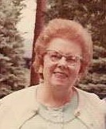
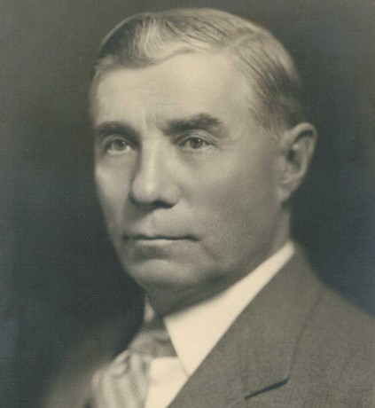

|
Född
omkring 1940
i Minneapolis, Hennepin County, Minnesota, USA
1
.
|
|
Lawrence Carlson
Född omkring 1940 i Minneapolis, Hennepin County, Minnesota, USA 1 . |
F
Arthur Carl Hanson.
Död 28 sep 1976 i Hennepin County, Minnesota, USA 2 . |
||
|
 M Ruth Katherine Hanson f Carlson.Född 18 maj 1905 i Minneapolis, Hennepin County, Minnesota, USA 3 . Död 20 jun 1976 i Minneapolis, Hennepin County, Minnesota, USA 3 . |
 MF Svante Victor Eliasson Karlsson.Född 9 sep 1861 i Mörtebäck, Hannäs (E) 4 . Död 22 jul 1937 i Minneapolis, Hennepin County, Minnesota, USA 5 . |
MFF Elias Karlsson. Född 10 dec 1816 i Mörtebäck, Hannäs (E) 6 . Död 31 okt 1867 i Mörtebäck, Hannäs (E) 7 . |
|
|
MFM Sara Fredrika Andersdotter. Född 12 jul 1830 i Odensvi (H) 8 . Död Attest 018618 11 jul 1915 i Minneapolis, Hennepin County, Minnesota, USA 9 . |
|||
|
MM
Amanda Josefina Karlsson f Gustafsdotter.
Född 21 mar 1870 i Stenbrohult, Burseryd (F) 10 . Död 8 jan 1956 i Minnesota, USA 11 . |
|||
Framställd 12 aug 2026 med hjälp av Disgen version 2025.